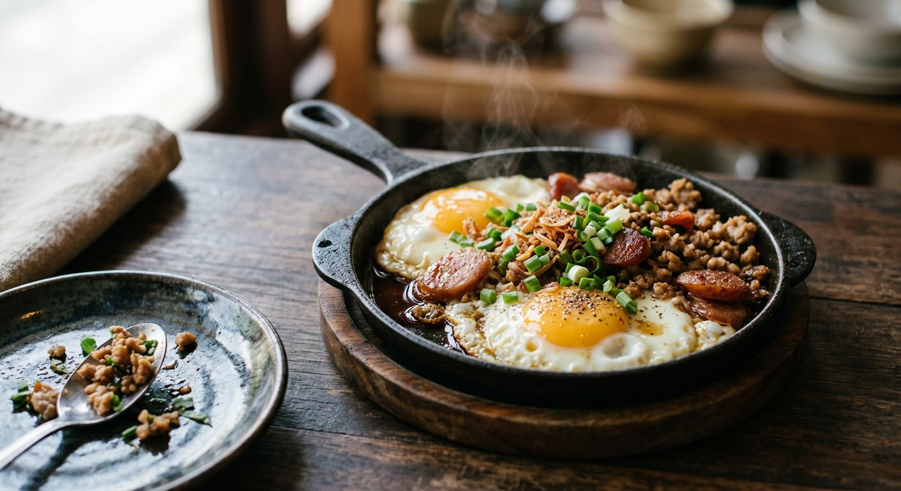

Two eggs cracked into a small buttered pan, loaded with seasoned minced pork, Chinese sausage and Vietnamese sausage, steamed under a lid — then set down sizzling with a baguette and a dash of seasoning sauce. The northeast's answer to breakfast.

The name is the whole dish: ไข่ (kai), egg — and กระทะ (krata), pan. The pan is not a serving gimmick. It is the cooking vessel, the plate and the reason the eggs arrive at the table still hissing in butter, and the dish is defined as much by it as by what sits on top of the eggs.
The dish is an Isaan institution, but its family tree points east. The old Thai sources tell the same story: kai kratha came to the northeast with the Vietnamese food culture that followed French Indochina — bloggang's coffeebake spells it out, tracing the dish to Vietnam's breakfast shops and the baguette (บาแกต) that still rides along with it. It settled into the morning menus of Udon Thani and Khon Kaen, where breakfast shops keep it on the menu next to Vietnamese-style stuffed bread, boiled eggs and thick sweet coffee.
And the toppings are the fun of it. The classic pan, as Wongnai's writers themselves note, is the one loaded with หมูยอ (Vietnamese pork sausage), กุนเชียง (sweet Chinese sausage) and หมูสับ (seasoned minced pork). Kapook's four-style roundup takes it further — prawns, ham, pork sausage, shiitake, tomato — while Wongnai's own recipe goes full American with bacon, ham and bologna. The dish is a frame: what the shop (or your fridge) has goes in it.
| Thai | English | Amount |
|---|---|---|
| รากผักชี | Coriander root | 1 |
| กระเทียม | Garlic | 1 clove |
| พริกไทย | White peppercorns | 3 |
| เนยจืด | Unsalted butter | 1½ tbsp |
| หมูบด | Minced pork | 80 g |
| ซีอิ๊วขาว | Light soy sauce | to taste |
| พริกหวานหั่นเต๋า | Sweet pepper, diced | ¼ cup |
| ไข่ไก่ | Eggs | 2 |
| หมูยอ | Vietnamese pork sausage, sliced | 1 tbsp |
| กุนเชียง | Chinese sausage, sliced | 1 tbsp |
| หมูหยอง | Pork floss | 1 tbsp |
| ต้นหอมซอย | Spring onion, sliced | for serving |
| พริกไทยขาวป่น | Ground white pepper | for serving |
| ซอสปรุงรส | Seasoning sauce (Maggi / Golden Mountain) | for serving |
The traditional pan (Bloggang, coffeebake): the same trio, but the pork is cooked with soy sauce, oyster sauce, a spoon of water and ½ tsp sugar; the Vietnamese sausage is halved and fried golden, the Chinese sausage fried slowly in low-hot oil, and everything goes into the pan together with 1 tbsp butter and 2 eggs, covered for 2.30–3.30 minutes. The loaded pan (Kapook): minced pork stir-fried with onion (prawns optional, oyster sauce + light soy + pepper), kun chiang boiled first then fried, then butter, 2 eggs, and pork, sausage, ham and moo yor pressed into the whites — served with chilli sauce, tomato sauce or seasoning sauce. The American pan (Wongnai): bacon, ham, sausage and bologna fried in butter first, pushed aside, eggs cracked in, tomato and spring onion on top — 320 kcal a serving.
The topping set. The classic trio is minced pork, kun chiang and moo yor (Phol Food Mafia, coffeebake). Kapook's first recipe loads the pan further — ham, pork sausage, and prawns if you have them — and its second recipe goes the other way, almost vegetarian-leaning with shiitake and tomato. Wongnai keeps bacon, ham, sausage and bologna for its self-described American-style pan. Wongnai's own intro concedes the familiar Thai version is the one with moo yor, kun chiang and minced pork.
The kun chiang. Kapook boils the Chinese sausage, drains it, then fries it. coffeebake skips the boil and fries it slowly in low-hot oil, warning that the sausage's sugar burns fast. Both agree on one thing: it is pre-cooked and coloured before it reaches the eggs.
The seasoned pork. Phol Food Mafia builds it on pounded coriander root, garlic and peppercorns with light soy only. Kapook builds it on onion with oyster sauce, light soy and pepper — sugar optional, "if you like it sweet". coffeebake uses soy and oyster sauce with water and half a teaspoon of sugar so the meat cooks soft instead of searing. Three shops, three porks — all stir-fried dry and set aside before the eggs go in.
Egg doneness. coffeebake gives an exact lid time: 2.30–3.30 minutes. Kapook and Phol Food Mafia refuse to time it — "until done the way you like" — since the runny-to-set spectrum is personal. Nobody disputes the technique itself: lid on, steam sets the whites, yolk stays soft.
What to serve with it. coffeebake is strict: the pan comes with a steamed, buttered baguette. Kapook is looser — bread or coffee, with chilli sauce, tomato sauce or seasoning sauce on the table. Phol Food Mafia ends on seasoning sauce and white pepper. The baguette is the common thread that ties the dish back to its Vietnamese origins.
This recipe is translated from the following Thai-language sources. Where they disagree, we've said so.
1. Phol Food Mafia — "Skillet Egg (ไข่กระทะ)" by Nakul Kavinrat, HOME COOKED, 7 July 2024 (the recipe used here) — pholfoodmafia.com
2. Kapook Cooking — "4 สูตรไข่กระทะ อาหารเช้าเมนูไข่เพิ่มพลัง ระวังกินหมดแบบไม่ตั้งตัว" (the four-style roundup; the loaded pan with prawns and ham) — cooking.kapook.com
3. Bloggang — "ไข่กระทะ สูตรดั้งเดิม (Fried Egg with Pork and Sausage)" by coffeebake (the traditional recipe; the Vietnamese-origin story; exact lid timing) — bloggang.com
4. Wongnai — "วิธีทำ 'ไข่กระทะ' เมนูไข่สไตล์อเมริกัน ทำง่าย อิ่มท้องพร้อมสู้งาน!" (the American-style pan; the note that the familiar Thai version carries moo yor, kun chiang and minced pork) — wongnai.com